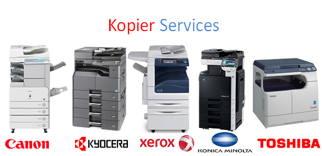
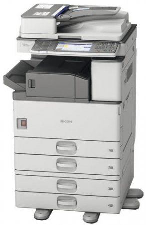
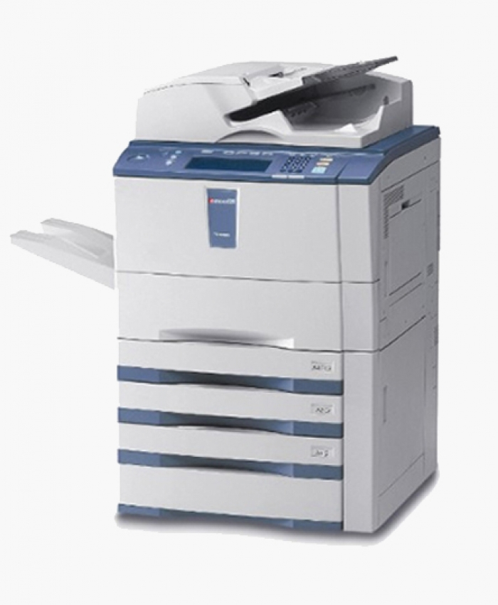
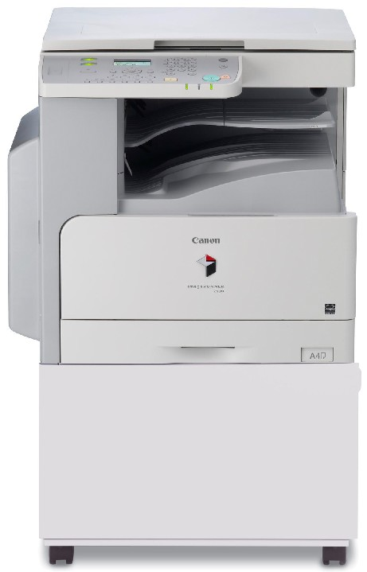
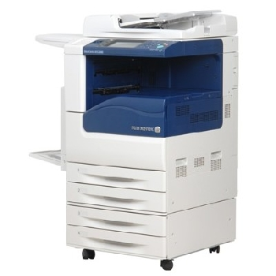

Sửa máy photocopy

SỬA MÁY PHOTOCOPY CHUYÊN NGHIỆP
Công ty chúng tôi chuyên sửa các dòng máy photo Toshiba, Ricoh, Sharp, Canon.. tận nơi các quận Tân Bình, Tân Phú, Bình Tân, Quận 5, quận 6, 10, 11..
Hotline: 0908327123
Tel : 028 6271 1252 – Fax : 028 225.347.46
Website: www.napmucnhanh24h.com
2. Lỗi in bị vệt đen, in mờ, in bị lệch,in bị đè chữ.
3. Scan bị lỗi.
4. Bản photo có vệt đen dọc, đen ngang.
5. Bản photo bị mờ phần trên phần dưới lại đậm, photo không đều mực.
6. Bản photo bị đen sì.
7. Báo lỗi SC441.
8. Thay Vật tư- Linh kiện máy photocopy: Trống, lô ép, lô sấy, dạ lau, gạt trống, gạt belt, Belt ảnh, Cò sấy, cò trống,Sensor…
9. Dịch vụ đổ mực( Đổ mực máy in, đổi các cartridge, đổi các ống mực).
10. Thay từ.
11. Sửa lỗi không nhận giấy.
12. Bản photo bị chấm đen.
13. Lỗi main nguồn.
14. Lỗi main tín hiệu.
15. Lỗi bo mạch, báo đèn.
16. Máy photocopy không khởi động được.
17. Máy photocopy không cuộn được giấy.
18. In nửa đậm nửa nhạt.
19. Máy bị lỗi làm nhăn giấy.
20. Sửa cụm quét dầu.
21. Bảo dưỡng thiết bị máy.
22. Sửa lỗi chữ đổ bóng, bị lem mực.

Chuyên sửa máy photo Ricoh các loại
– aficio 161, aficio 161L, aficio 1600, aficio 1500, aficio 1800, aficio 2000, aficio 2000 LE, aficio 2001, aficio 1060, aficio 2060, aficio 1075, aficio 2075, aficio 4000, aficio 5000,aficio 4001, aficio 5001,aficio 6000, aficio 6001, aficio 5000, aficio 5000B,
– aficio 4000B, aficio 5002,aficio 4002,aficio 7001, aficio 171,aficio 1800, aficio 1813, aficio 1900, aficio 2001, aficio 201, aficio 2352,aficio 2501, aficio 2352, aficio 2550, aficio 2852, aficio 3053, aficio 3052, aficio 3353, aficio 4002…

Sửa chữa máy photo Toshiba các loại
– E – STUDIO 2505, E – STUDIO 2505H, E – STUDIO 2006, E – STUDIO 2007, E – STUDIO 205, E – STUDIO 2506,E – STUDIO 2507, E – STUDIO 255, E – STUDIO 256, E – STUDIO 282, E – STUDIO 283, E-Studio 305, E-Studio 306, E-Studio 352, E-Studio 353,
– E-Studio 355, E-Studio 356, E-Studio 452, E-Studio 453, E-Studio 455, E-Studio 456. E-Studio 506, E-Studio 550, E-Studio 556, E-Studio 655, E-Studio 656, E-Studio 720, E-Studio 723, E-Studio 755, E-Studio 756, E-Studio 810, E-Studio 850, E-Studio 853, E-Studio 855…

Sửa chữa máy photo Canon các loại
– Canon IR 2018, canon IR 2016, canon IR 2420, canon IR 2520, canon IR 3530, canon IR 5000, canon IR 2014, canon IR 1024, canon IR 1325, canon IR 2422, canon IR 2545, canon IR 2525, canon IR 2530, canon IR 2002,
– Canon IR 2202, canon IR 2535,canon IR 3545, canon IR 4025, canon IR 4035, canon IR 4045, canon IR 4051…..

Sửa chữa máy photo Xerox các loại
– Xerox DC 1058, xerox DC 2005, xerox DC 3005, xerox DC 2007, xerox DC 3007, xerox DC 186, xerox DC 286, xerox DC 236, xerox DC336, xerox DC 450, xerox DC 350, xerox DC4000, xerox DC 3065 , xerox DC 4065, xerox DC 6000, xerox DC 7000, xerox DC 2007, xerox DC 3007, xerox DC 2263
XEM BẢNG GIÁ NẠP MỰC NGAYCần nạp mực hoặc sửa máy in tận nơi? Mực In Trường Phát có mặt trong 30 phút tại TP.HCM — in test trước khi tính tiền, bảo hành 1 tháng.
0908.327.123 · 0819.007.394 (Zalo cả 2 số)